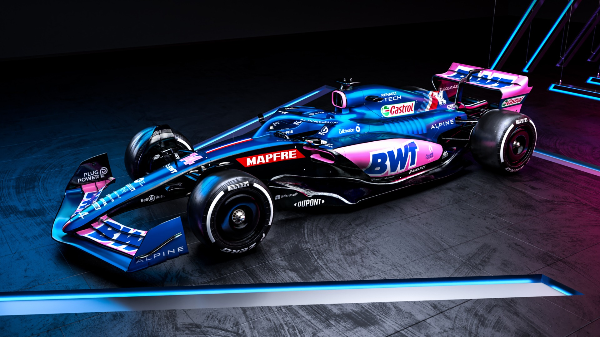
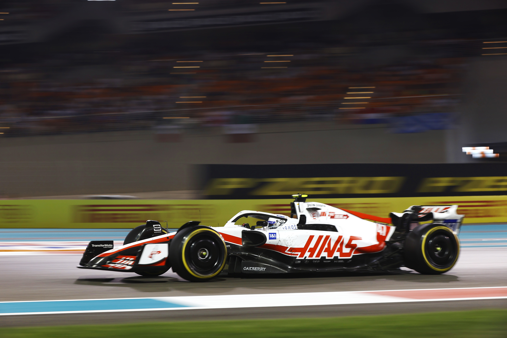

Current Season - Teams & Drivers:
Oracle Red Bull Racing
Prior to officially entering as a works team in 2004, Red Bull had experience in Formula One as official sponsors. However, the extent of their achievement during the succeeding ten years was astounding. Following their first podium finish in 2006, the team found their groove in 2009, winning six races and finishing second in the constructors' standings. Sebastian Vettel became the sport's youngest quadruple champion for the following four seasons as they became a force to be reckoned with, winning consecutive title doubles between 2010 and 2013. A similarly promising talent, one by the name of Max Verstappen, now holds the key to their aspirations of reclaiming that glory.
- Base: Milton Keynes, United Kingdom
- Team Chief: Christian Horner
- Technical Chief: Pierre Wache
- Chassis: RB18
- Power Unit: Red Bull Powertrains
- First Team Entry: 1997
- World Championships: 5
- Highest Race Finish: 1st
- Pole Positions: 81
- Fastest Laps: 84
Team Drivers:
- Max Verstappen #1
- Sergio Perez #11

Scuderia Ferrari
Ferrari and Formula 1 racing have, for many people, become synonymous. The Prancing Horse, the only team to have participated in each and every season since the world championship began, has evolved from the modest goal of founder Enzo Ferrari to become one of the most recognizable and well-known brands in the entire world. Success was achieved quickly with drivers like Alberto Ascari and John Surtees, and it persisted despite tougher times with Niki Lauda in the 1970s and then Michael Schumacher in the 2000s, when Ferrari won an unprecedented five straight championships, cementing their position as the most successful and decorated team in Formula One history.
- Base: Maranello, Italy
- Team Chief: Mattia Binotto
- Technical Chief: Enrico Cardile
- Chassis: F1-75
- Power Unit: Ferrari
- First Team Entry: 1950
- World Championships: 16
- Highest Race Finish: 1st
- Pole Positions: 242
- Fastest Laps: 258
Team Drivers:
- Charles Leclerc #16
- Carlos Sainz #55

Mercedes-AMG Petronas F1 Team
With the formation of a works squad for 2010, Mercedes' modern F1 rebirth got underway, serving as the foundation for an explosive ascent up the Grand Prix standings. With Michael Schumacher's stunning comeback, the team immediately generated a lot of buzz. However, the racing world soon caught wind of the team's success when Nico Rosberg won three podiums in their inaugural season in China in 2012. He was teamed with Lewis Hamilton the next season, and the two went on to stage some epic title races as the Silver Arrows swept everyone in their path to become one of the most powerful teams in the contemporary era of Formula One. And with George Russell now partnering with Hamilton, Mercedes is still the squad to beat.
- Base: Brackley, United Kingdom
- Team Chief: Toto Wolff
- Technical Chief: Mike Elliot
- Chassis: W13
- Power Unit: Mercedes
- First Team Entry: 1970
- World Championships: 8
- Highest Race Finish: 1st
- Pole Positions: 128
- Fastest Laps: 91
Team Drivers:
- Lewis Hamilton #44
- George Russell #63

BWT Alpine F1 Team
Although Alpine may be a relatively new name in Formula 1, Renault's renowned sportscar division has a long history in motorsport. The team's rebranding in 2021 was the next phase of Renault's F1 comeback, which had started in 2016 with the acquisition of the then-Lotus team. In their new guise, they have already won races, so their next objective must be frequent podiums and an attempt at the championship.
- Base: Enstone, United Kingdom
- Team Chief: Otmar Szafnauer
- Technical Chief: Pat Fry
- Chassis: A522
- Power Unit: Renault
- First Team Entry: 1986
- World Championships: 2
- Highest Race Finish: 1st
- Pole Positions: 20
- Fastest Laps: 15
Team Drivers:
- Fernando Alonso #14
- Esteban Ocon #31

McLaren F1 Team
Bruce McLaren, the founder of the company that bears his name, guided and persisted in McLaren's entry into the sport in 1966, and the results have been nothing short of stunning. In addition to eight constructors' titles, five glimmering decades have produced innumerable victories, pole positions, and podium finishes. Additionally, the team produced some of the best drivers in sports history, including Emerson Fittipaldi, Ayrton Senna, Mika Hakkinen, and Lewis Hamilton.
- Base: Woking, United Kingdom
- Team Chief: Andreas Seidl
- Technical Chief: James Key
- Chassis: MCL36
- Power Unit: Mercedes
- First Team Entry: 1966
- World Championships: 8
- Highest Race Finish: 1st
- Pole Positions: 156
- Fastest Laps: 162
Team Drivers:
- Lando Norris #4
- Daniel Riccardo #3

Alfa Romeo F1 Team ORLEN
Since the beginning of the Formula 1 championship in 1950, the name Alfa Romeo has been associated with the sport. In the twenty-first century, the team formerly known as Sauber has a new era where Italian flair and Swiss sensibilities merge. Peter Sauber led his namesake team into Formula One in 1993 after enjoying tremendous success in global sportscars, where he assisted in developing the abilities of future F1 stars Michael Schumacher and Heinz-Harald Frentzen. Since then, the team has been a stalwart of the grid, winning races when briefly owned by BMW, and earning a well-deserved reputation for both building competitive vehicles and training up-and-coming drivers.
- Base: Hinwil, Switzerland
- Team Chief: Frederic Vasseur
- Technical Chief: Jan Monchaux
- Chassis: C42
- Power Unit: Ferrari
- First Team Entry: 1993
- World Championships: 0
- Highest Race Finish: 1st
- Pole Positions: 1
- Fastest Laps: 6
Team Drivers:
- Valtteri Bottas #77
- Zhou Guanyu #24

Aston Martin Aramco Cognizant F1 Team
In its first appearance in Formula 1 more than 50 years ago, Aston Martin competed in just five races. But this time, it's critical. This F1 team has a history of winning; they were first known as Jordan and most recently as Racing Point in 2020. With a four-time champion at the head of their driver lineup and a reputation for punching above their weight, Aston Martin is definitely a team to watch.
- Base: Silverstone, United Kingdom
- Team Chief: Mike Krack
- Technical Chief: Andrew Green
- Chassis: AMR22
- Power Unit: Mercedes
- First Team Entry: 2018
- World Championships: 0
- Highest Race Finish: 1st
- Pole Positions: 1
- Fastest Laps: 0
Team Drivers:
- Lance Stroll #18
- Sebastian Vettel #5

Haas F1 Team
Haas, the newest team on the grid, made a hugely impressive début in 2016, becoming the first all-American-led F1 team in three decades. They are located in the United States at the same facility as championship-winning NASCAR Sprint Cup Series team, Stewart-Haas Racing, and were founded by the businessman Gene Haas. A factory in Banbury, England, houses the Ferrari-powered squad, which is driven by the renowned Guenther Steiner.
- Base: Kannapolis, United States
- Team Chief: Guenther Steiner
- Technical Chief: Simone Resta
- Chassis: VF-22
- Power Unit: Ferrari
- First Team Entry: 2016
- World Championships: 0
- Highest Race Finish: 4th
- Pole Positions: 1
- Fastest Laps: 2
Team Drivers:
- Mick Schumacher #47
- Kevin Magnussen #20

Scuderia AlphaTauri
AlphaTauri, formerly known as Toro Rosso, was created in 2006 as a team for future drivers from Red Bull's enormous talent pool to have their F1 start. They were built from the remains of the tenacious Minardi team. The strategy was validated almost right away by Sebastian Vettel, who won a fantastic race in 2008 before going on to win the world championship with Red Bull Racing, his parent organization. The philosophy of developing talent is still valid today, even if the Italian team is no longer just a "B team" but rather a constructor in their own right.
- Base: Faenza, Italy
- Team Chief: Franz Tost
- Technical Chief: Jody Egginton
- Chassis: AT03
- Power Unit: Red Bull Powertrains
- First Team Entry: 1985
- World Championships: 0
- Highest Race Finish: 1st
- Pole Positions: 1
- Fastest Laps: 2
Team Drivers:
- Pierre Gasly #10
- Yuki Tsunoda #22

Williams Racing
Williams rose from humble beginnings to become a Formula 1 giant, unrivaled by any team save Ferrari and McLaren in terms of long-term success, propelled forward by the intellect and passion of the late Sir Frank Williams. The team has amassed Grand Prix victories and championship success over the last four decades, and in the process, it has cultivated some of the best athletes in the sport, both in and out of the cockpit. A new era has started after the Williams family decided to stand aside following the team's sale to Dorilton Capital.
- Base: Grove, United Kingdom
- Team Chief: Jost Capito
- Technical Chief: Francois-Xavier Demaison
- Chassis: FW44
- Power Unit: Mercedes
- First Team Entry: 1978
- World Championships: 9
- Highest Race Finish: 1st
- Pole Positions: 128
- Fastest Laps: 133
Team Drivers:
- Nicholas Latifi #6
- Alexander Albon #23